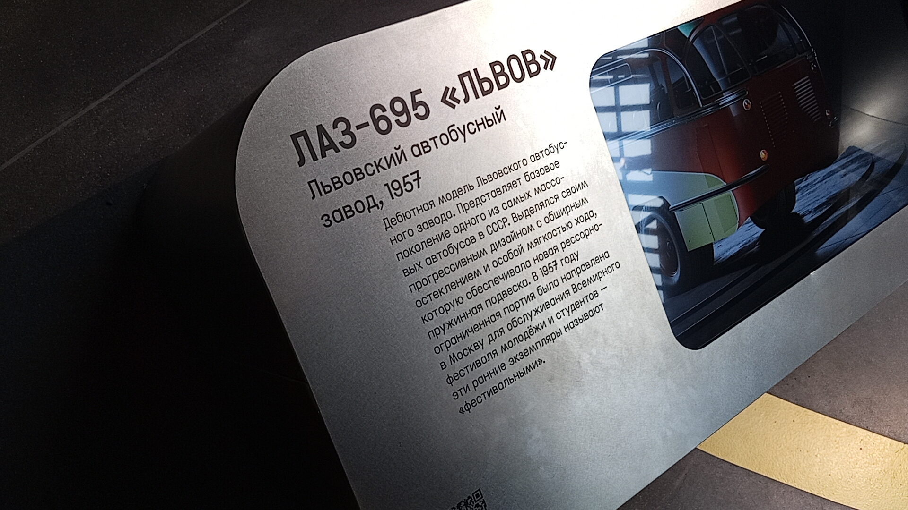
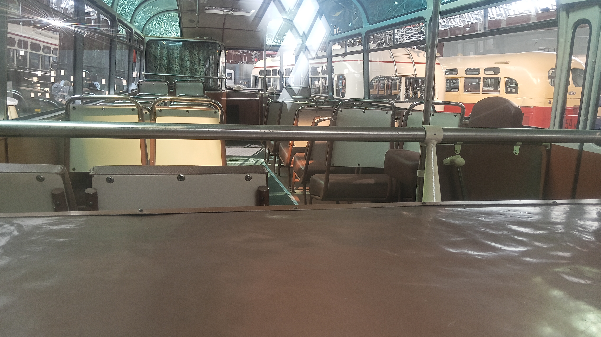

ЛАЗ-695 «Львов» (1957)
Перед вами дебютная модель Львовского автобусного завода. Представленный экземпляр относится к самым массовым в СССР автобусам второго поколения. Это один из ограниченной партии, которая была направлена в Москву для обслуживания Всемирного фестиваля молодёжи и студентов 1957 года.
Эти ранние экземпляры называют «фестивальными». Экспонат выделялся своим прогрессивным дизайном с обширным остеклением и особой мягкостью хода, которую обеспечивала новая рессорно-пружинная подвеска.
Общая информация об экспонате
🏭 Производство
Завод-изготовитель: Львовский автобусный завод (ЛАЗ)
Модель: ЛАЗ-695 «Львов»
Год выпуска экспоната: 1957
Тип: Городской высокопольный автобус среднего класса
📍 Музейный статус
Местонахождение: Музей Транспорта Москвы
Состояние: Не эксплуатируется (музейный экспонат)
Особенность: «Фестивальный» экземпляр
Назначение: Обслуживание Всемирного фестиваля молодёжи и студентов
⭐ Роль в истории: Это дебютная модель Львовского автобусного завода. Именно с этих машин началось триумфальное шествие ЛАЗ-695 по дорогам СССР. Ограниченная партия, выпущенная в 1957 году, возила гостей и участников Всемирного фестиваля молодёжи и студентов в Москве.
Технические характеристики
Основные параметры
Длина: 9,19 м
Ширина: 2,5 м
Высота: 2,87 м
Снаряжённая масса: 6750 кг
Вместимость: 65 пассажиров (32 сидячих)
Максимальная скорость: 75 км/ч (ранняя версия)
Силовая установка
Двигатель: ЗИЛ-158Л, 5,56 л, 109 л.с. (на ранних версиях)
КПП: 5-ступенчатая механическая
Расположение: заднее, продольное
Подвеска: Рессорно-пружинная
История экспоната
Разработка модели
Первый прототип ЛАЗ-695 собрали 12 февраля 1956 года. Конструкторы изучали импортные модели, но создали собственную прогрессивную конструкцию с несущим кузовом и задним расположением двигателя.
Дебют на фестивале
Первые товарные машины выпустили в 1957 году к московскому Международному фестивалю молодёжи и студентов. Ограниченная партия была направлена в Москву для обслуживания гостей фестиваля.
Медаль в Брюсселе
В 1958 году автобус отметили медалью на международной выставке в Брюсселе. Модель получила признание на мировом уровне.
Сохранение для истории
Данный экземпляр 1957 года был отреставрирован и занял достойное место в экспозиции Музея Транспорта Москвы. Это один из немногих сохранившихся «фестивальных» автобусов.
Особенности конструкции
Прогрессивный дизайн
Дебютная модель имела обширное остекление и обтекаемую форму, что выделяло её на фоне предшественников. Дизайн считался очень прогрессивным для своего времени.
Рессорно-пружинная подвеска
Особая мягкость хода обеспечивалась новой рессорно-пружинной подвеской. Это было важное преимущество для городских перевозок.
Заднемоторная компоновка
Двигатель располагался продольно в заднем свесе. Это освободило место для пассажирского салона и снизило шум.
Несущий кузов
Пространственная конструкция с несущим основанием, интегрированным с каркасом кузова. Лёгкий каркас был спроектирован по лекалам немецких автобусов Mercedes-Benz и Setra.
Фотогалерея

Экспонат 1957 года («фестивальный»).

Музейная информация.

Внутреннее убранство (можно войти).
Нажмите на фото для увеличения
«Ограниченная партия была направлена в Москву для обслуживания Всемирного фестиваля молодёжи и студентов — эти ранние экземпляры называют "фестивальными"».